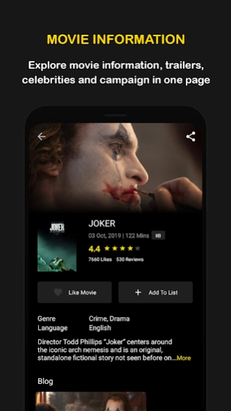
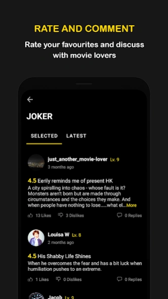

hkmovie 是什么？香港影迷的一站式观影助手快问快答
hkmovie 是面向香港影迷的查片、购票、影评社区 App。本文用一问一答的方式，把它能做什么、怎么注册、有什么独家内容、哪些院线购票记录能同步等高频问题一次讲清。
整理一篇关于 hkmovie 的快问快答——如果你在香港常看电影，或者对 MOVIE6 编辑部的独家内容好奇，这篇能帮你快速判断要不要装。
hkmovie 到底是什么？
一句话：它是香港本地影迷用的一站式观影 App，核心功能是查场次、买票、看影评，但真正让它和院线自家 App 拉开差距的，是背后 MOVIE6 编辑部出的独家访问和专题内容。普通聚合型 App 能抓海报和场次，但 MOVIE6 的导演专访、幕后花絮、编辑精选这些原创内容，只在 hkmovie 里首发，别的平台转个载都要授权。这也是它在香港影迷圈能长期留住人的原因——它的官网上也能看到完整的功能介绍和版本更新。

谁需要装它？
两类人最适用：常跑香港院线的本地影迷，和对香港电影幕后有兴趣的内容消费者。如果你住在香港、经常去 MCL 或高先电影院看片，hkmovie 的场次聚合和购票体验比每家院线装一个 App 省事得多。即便不常买票，只想看 MOVIE6 的独家专访——比如《毒舌律师》黄子华的访谈、《明日战记》的机械设计特辑——也值得装一个，这些内容在别的地方找不到。
怎么装、怎么注册？
安装包从hkmovie下载拿就行。注册很轻量，不需要设密码：打开 App 点「我的 → 登录/注册」，填手机号收 SMS 验证码，6 位数字输进去就完事了。注册后 App 默认永久保持登录，下次打开直接进。不过有一点要注意：验证码只支持实体手机号，VoIP 号和虚拟号大概率收不到。换手机也不怕，用同一个手机号登录，影评、收藏、购票记录会自动同步过来。
核心功能怎么用？
最常用的三个动作：查场次、买票、写影评。查场次直接搜电影名或按院线筛选，详情页里能看到 MOVIE6 独家标记——有这个标记的点进去就是专访或花絮。买票选好场次跳转到支付流程，MCL、高先、星达这三家的票买完后记录会自动同步回 App 的「购票记录」里。想写影评的话，进电影详情页拉到点「写影评」，先打星级（五星制），再写正文，100 到 500 字最合适。你的评分会参与这部片的综合分计算，影评则显示在详情页的影评区——还没上手的话，hkmovie文档里有更细的操作图解和功能说明。

为什么我的购票记录没显示？
这是 hkmovie 的高频坑，先别慌。首先确认你买的是哪家院线——只有 MCL、高先、星达三家的购票记录会自动同步，百老汇、嘉禾、英皇这些统统不支持，记录得去对应院线 App 查。如果确实买的是这三家但还是看不到，按顺序试：下拉刷新购票记录页、切一下 Wi-Fi 和 4G、完全杀掉 App 重开、退出登录再 SMS 验证重新登一遍。还不行就查一下购票时用的手机号和现在是不是同一个。
进场前记录突然加载不出来怎么办？
紧急情况有紧急处理办法。MCL 院线可以用购票信用卡到自助机取票，或者找柜台报预订号码。但高先和星达没有柜台也没有自助机，只能靠 QR Code 入场——所以平时一定要养成购票成功后立刻截图保存 QR Code 的习惯，这是唯一的保险。真要是没截图、手机网络又挂了，只能当场发邮件给客服 support@hkmovie6.com 碰运气，服务时间是周一到五 10 点到 19 点。
MOVIE6 的独家内容具体有什么？
MOVIE6 是 hkmovie 背后的编辑部品牌，产出的内容分五类：导演专访、演员访谈、幕后花絮、MOVIE6 热话、独立影评。专访和花絮是它最核心的差异化——比如《风再起时》翁子光导演专访、《毒舌律师》黄子华访谈这些，都是和主创直接对接出来的。相比主流电影媒体更关注好莱坞大片，MOVIE6 对香港本地华语片和合拍片的覆盖更深，新片首映礼后第一时间就能出专访。找这些内容有三种方式：首页中部的「编辑精选」和「MOVIE6 热话」横向卡片组、电影详情页里的「独家访问」标记、底部「我的」里的 MOVIE6 专栏入口。
评分和影评靠谱吗？
综合分是所有会员评分的算术平均值，但刚上映的电影评分人数少，可信度有限，通常上映一两周后有几百条评分才比较稳。和所有用户评分系统一样，hkmovie 也有刷分——粉丝团打五星、竞争对手打一星的情况都存在。判断时看三点：评分人数多不多、影评是模板化还是有实质内容、结合 MOVIE6 的编辑精选一起看，编辑推荐不受粉丝刷分影响。正常影评不会被删，但广告、辱骂、恶意刷分会被下架。
值不值得长期装？
如果你在香港常看华语片、对幕后内容有好奇心，值得装——查片购票省心，MOVIE6 独家内容在别的地方找不到。如果一年只进一两次影院，可能院线自家 App 就够了，但留着也不占空间。这套资料在GitHub、Gitee、GitCode 三个仓库都能拿到备份，担心 App 下线或换地区访问的可以去扒一份。